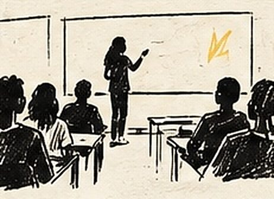

Une semaine de battle de compliments dans un collège de Beaucaire
En une semaine, deux classes d'un collège de Beaucaire ont vécu un format immersif de battle de compliments — environ douze heures au total — jusqu'à une restitution dans le hall, sous les acclamations de centaines d'élèves.
Auteur : Esope · Intervenants slam : Esope

Un collège de Beaucaire, dans le Gard, m'a confié une semaine de battle de compliments avec deux classes : environ douze heures d'atelier concentrées sur cinq jours, jusqu'à une restitution dans le hall du collège qui a rassemblé des centaines d'élèves.
Le contexte : un format resserré dans le temps
Répartir douze heures sur une semaine plutôt que sur plusieurs mois change complètement la dynamique d'un projet. Les élèves n'ont pas le temps d'oublier une séance avant la suivante, l'écriture reste en tête en dehors de l'atelier, et l'ensemble du collège finit par être au courant du projet avant même la restitution — l'effet d'annonce joue à plein.
Le déroulement de la semaine
Le battle de compliments se prête bien à ce format immersif : chaque séance nourrit directement la suivante, sans le temps mort qu'impose un rythme hebdomadaire habituel. Les deux classes ont travaillé en parallèle une bonne partie de la semaine, avant un dernier temps commun consacré aux répétitions et à la mise en place de la restitution dans le hall — un lieu de passage que tout le collège traverse plusieurs fois par jour, donc un choix loin d'être neutre pour l'ampleur de l'événement.
Les techniques travaillées
Le travail suit la progression habituelle du battle de compliments — observation, comparaison, rythme de la punchline — mais la concentration sur une semaine a permis d'aller plus vite sur chaque étape, les élèves gardant en mémoire fraîche ce qui avait été vu la veille. C'est un format qui demande de l'énergie, pour eux comme pour moi, mais qui produit des textes très aboutis en peu de temps.
Ce que les élèves ont travaillé
Ce format immersif permet de travailler l'écriture et la prise de parole dans une continuité que les emplois du temps scolaires classiques ne permettent pas. Les élèves ont aussi été amenés à gérer une forme de pression inhabituelle : savoir qu'ils allaient se produire devant tout le collège quelques jours seulement après avoir commencé à écrire.
Le moment marquant
La restitution dans le hall a rassemblé des centaines d'élèves venus acclamer les punchlines, dans une énergie que je qualifierais sans exagérer de folle. Un format aussi resserré dans le temps aurait pu jouer contre l'ampleur de l'événement ; il l'a au contraire renforcée, comme si toute la semaine avait construit une attente collective jusqu'à ce moment précis.
Ce que ce projet a permis d’explorer
Cette semaine a montré qu'un format intensif de battle de compliments peut produire une énergie collective qui dépasse largement les deux classes concernées. Si votre établissement cherche à marquer un temps fort sur une semaine plutôt que sur un trimestre, on peut construire ce format ensemble.